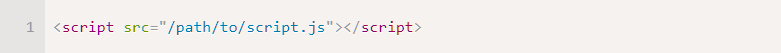

Типы данных
Число
Числовой тип данных (number) представляет как целочисленные значения, так и числа с плавающей точкой.
Существует множество операций для чисел, например, умножение *, деление /, сложение +, вычитание - и так далее.
Кроме обычных чисел, существуют так называемые «специальные числовые значения», которые относятся к этому типу данных: Infinity, -Infinity и NaN.
Infinity представляет собой математическую бесконечность ∞. Это особое значение, которое больше любого числа. Мы можем получить его в результате деления на ноль:
NaN означает вычислительную ошибку. Это результат неправильной или неопределённой математической операции, например:
BigInt
В JavaScript тип «number» не может содержать числа больше, чем (253-1) (т. е. 9007199254740991), или меньше, чем -(253-1) для отрицательных чисел. Это техническое ограничение вызвано их внутренним представлением.
Для большинства случаев этого достаточно. Но иногда нам нужны действительно гигантские числа, например, в криптографии или при использовании метки времени («timestamp») с микросекундами.
Тип BigInt был добавлен в JavaScript, чтобы дать возможность работать с целыми числами произвольной длины.
Чтобы создать значение типа BigInt, необходимо добавить n в конец числового литерала:
Строка
Строка (string) в JavaScript должна быть заключена в кавычки.
В JavaScript существует три типа кавычек:
1. Двойные кавычки: "Привет".
2. Одинарные кавычки: 'Привет'.
3. Обратные кавычки: `Привет`.
Двойные или одинарные кавычки являются «простыми», между ними нет разницы в JavaScript.
Обратные же кавычки имеют расширенную функциональность. Они позволяют нам встраивать выражения в строку, заключая их в ${…}. Например:
Выражение внутри ${…} вычисляется, и его результат становится частью строки. Мы можем положить туда всё, что угодно: переменную name, или выражение 1 + 2, или что-то более сложное.
Булевый тип
Булевый тип (boolean) может принимать только два значения: true (истина) и false (ложь).
Такой тип, как правило, используется для хранения значений да/нет: true значит «да, правильно», а false значит «нет, не правильно».
Например:
Булевые значения также могут быть результатом сравнений:
Значение «null»
Специальное значение null не относится ни к одному из типов, описанных выше.
Оно формирует отдельный тип, который содержит только значение null:
В JavaScript null не является «ссылкой на несуществующий объект» или «нулевым указателем», как в некоторых других языках.
Это просто специальное значение, которое представляет собой «ничего», «пусто» или «значение неизвестно».
В приведённом выше коде указано, что значение переменной age неизвестно.
Значение «undefined»
Специальное значение undefined также стоит особняком. Оно формирует тип из самого себя так же, как и null.
Оно означает, что «значение не было присвоено».
Если переменная объявлена, но ей не присвоено никакого значения, то её значением будет undefined:
Здесь /path/to/script.js – это абсолютный путь до скрипта от корня сайта. Также можно указать относительный путь от текущей страницы. Например, src="script.js" или src="./script.js" будет означать, что файл "script.js" находится в текущей папке.
Можно указать и полный URL-адрес.
Для подключения нескольких скриптов используйте несколько тегов:

Объекты и символы
Тип object (объект) – особенный.
Все остальные типы называются «примитивными», потому что их значениями могут быть только простые значения (будь то строка, или число, или что-то ещё). В объектах же хранят коллекции данных или более сложные структуры.
Объекты занимают важное место в языке и требуют особого внимания. Мы разберёмся с ними в главе Объекты после того, как узнаем больше о примитивах.
Тип symbol (символ) используется для создания уникальных идентификаторов в объектах. Мы упоминаем здесь о нём для полноты картины, изучим этот тип после объектов.
Итого
В JavaScript есть 8 основных типов:
1. number для любых чисел: целочисленных или чисел с плавающей точкой; целочисленные значения ограничены диапазоном ±(253-1).
2. bigint для целых чисел произвольной длины.
3. string для строк. Строка может содержать ноль или больше символов, нет отдельного символьного типа.
4. boolean для true/false.
5. null для неизвестных значений – отдельный тип, имеющий одно значение null.
6. undefined для неприсвоенных значений – отдельный тип, имеющий одно значение undefined.
7. object для более сложных структур данных.
8. symbol для уникальных идентификаторов.